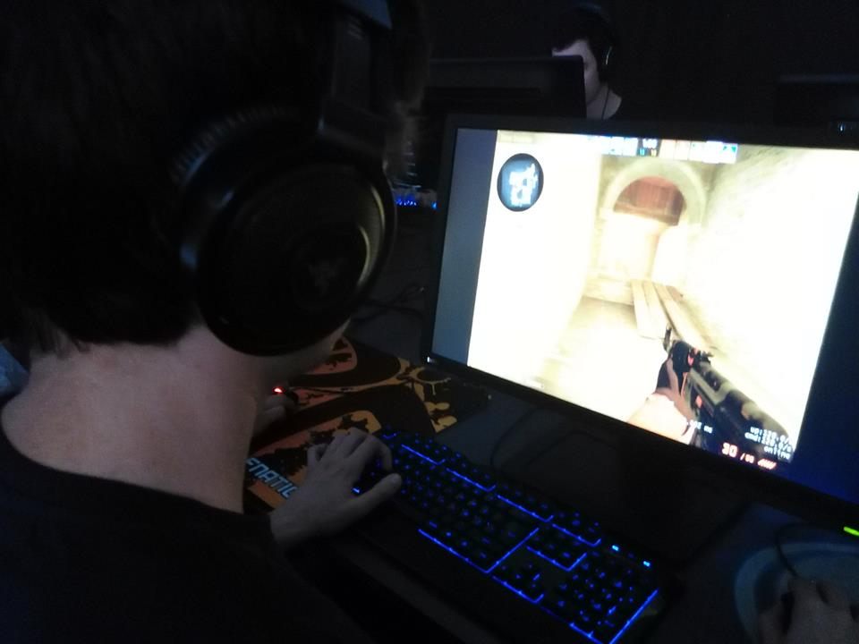

Notícias Recentes.
Equipe de volei feminino avança para as quartas de final
Nunc volutpat sagittis tellus. Pellentesque id aliquam urna. Morbi vulputate dignissim vulputate. Etiam faucibus cursus iaculis. Etiam varius mi sem, et malesuada nibh mattis id. Nam lobortis aliquam ultricies. Vestibulum ac neque tincidunt lectus tristique ultricies. Pellentesque habitant morbi tristique senectus et netus et malesuada fames ac turpis egestas.
Ver noticia
Conheça a equipe de CS:GO da lanhouse que disputa a liga amadora da GamersClub
Suspendisse ac sodales sem. Vestibulum vitae mauris dictum, blandit odio eu, imperdiet mi. Vivamus eu magna nec odio cursus efficitur. Aenean consequat tortor dolor, in maximus orci auctor a. Pellentesque malesuada odio ac ultrices viverra. Integer facilisis tellus massa, ac gravida eros sollicitudin non. Sed vestibulum in lorem vitae aliquam. Nunc aliquet tempor orci, nec ornare lorem aliquet a. Etiam vel sapien sed erat fermentum tincidunt.

Ver noticia
Como Freefire tem impacto na vida de crianças e adolescentes, como a competição pode ajudar as pessoas.
Aenean ligula ipsum, fermentum nec diam eu, interdum iaculis est. Vivamus maximus arcu ipsum, ut volutpat leo fermentum in. In hac habitasse platea dictumst. Maecenas ac nisi varius, vehicula dolor ac, ornare libero. Aliquam erat volutpat. Nam at mollis est. Ut a tellus in tortor ornare finibus non sit amet magna. Suspendisse potenti. Donec maximus vitae metus at aliquet.
Ver noticia
Time do bairro perde de 0 x 3
Aenean ligula ipsum, fermentum nec diam eu, interdum iaculis est. Vivamus maximus arcu ipsum, ut volutpat leo fermentum in. In hac habitasse platea dictumst. Maecenas ac nisi varius, vehicula dolor ac, ornare libero. Aliquam erat volutpat. Nam at mollis est. Ut a tellus in tortor ornare finibus non sit amet magna. Suspendisse potenti. Donec maximus vitae metus at aliquet.
Ver noticia